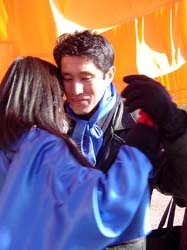

Commentaries on Argentine Tango and Life
by Stephen and Susan BrownAre Disagreeable People Entertaining?
30 December 2005 — Stephen Brown
The interactions between disagreeable (but sometimes loveable) people is a very common way of creating drama and comedy on television. Are disagreeable people really entertaining? The secret of television is in keeping disagreeable people a passive form of entertainment rather than an particiapatory form of entertainment. Maybe we can do the same in our every day lives.
Does that suggest that watching television is good preparation for every
day life? Such a thought probably takes the idea too far. For
one thing, television oversimplifies complex human interaction.
Will Your Dreams Come True in Buenos
Aires?
21 December 2005 — Stephen Brown
At Zapatos Rojos,
Desiree Vittorio writes:
"Thousands of tango dancers take a pilgrimage to the birthplace of
tango every year in hopes of bringing their dreams to life. Most
dancers have their first trip perfectly planned to fit their utmost tango
desires. The mythical creature that tango has become for American
tango dancers is fascinating, surreal, and bazaar. By explaining
a night at the milongas of Buenos Aires, your dreams will either come true,
be falsified, or new desires will arise.
"It is eleven o’clock and time to arrive at our first milonga of the night. My friend and I are dressed with our stereotypical tango dresses on, are lips are red and our eyelashes are long and black. The men we have on our arms plan to waltz us onto a perfect night of dancing. This night after all is what we have been talking about for quite a while. ..."
Continue Will Your Dreams Come True? on the Zapatos Rojos website.
For additional perspectives on dancing Argentine tango in Buenos Aires,
see The Invitation to Dance in Buenos
Aires and Visiting Buenos Aires to Dance
Argentine Tango.
North American Tango Festival Update
1 December 2005 — Stephen Brown
The number of tango festivals in North America continues to grow. Organizers have announced dates for at least 22 tango festivals in North America over the next 12 months. Five long-running festivals have yet to formally announce their 2006 dates. Four festivals were held for the first time in late 2005, and the organizers have yet to announce whether they will reprise these events in 2006.
Some of the festivals emphasize social dancing, and some feature big-name instructors. Either way, a good festival offers many hours of social dancing, an extensive class schedule with quality instruction, and an opportunity to meet and dance with tango dancers from all over. Many of the events are surprisingly affordable.
The list has been deleted. For a current worldwide list of tango festivals, see Tango Festivals and Other Events on this website. Another resource for festival information is Tobias Conradi's festivals.tango.info.
For some thoughts about dancing at tango festivals, see Dancing
at Tango Festivals (23 May 2004), More
on Dancing at Tango Festivals (25 May 2004), More
on Dancing at Tango Festivals (2) (25 May 2004), and More
on Dancing at Tango Festivals (3) (28 May 2004).
Dancing Tango Boosts Brain Function
21 November 2005 — Stephen Brown
Argentine Tango not only keeps the aging body in shape, it may also help sharpen the aging brain more than simple exercise, according to a recent study. The study, presented by Patrica McKinely at the annual meeting of the Society for Neuroscience, adds to a growing body of evidence that finds challenging leisure activities may offer a boost in brainpower that could offset the declines that can come with old age. Previous studies had shown that exercise improves brain function, but tango proved to do more.
For the study, McKinley and her team recruited 30 seniors ages 68 to 91. Half the group got tango lessons, and the other half were assigned to a walking group. After 10 weeks, the team found that both walkers and dancers had improved memory scores. The tango group also showed improved balance, posture and motor coordination, as well as cognitive gains. These skills are useful in dancing and other aspects of everyday life.
See articles about the study in USA
Today or the Society
for Neuroscience news release. My thanks to John Trimble and
Tine Herreman for pointing out these links.
Familiarity Breeds Comfort
21 November 2005 — Stephen Brown
On Tango-L,
Kace Ong writes:
"After a month of checking out milongas in Buenos Aires, I must have
heard the same songs more than 50 times, but I have to agree there is still
a lot of individual variation in the dancing that result from a combination
of the two people in each couple, the size and dimension of the room, the
density of the crowd, and even which other famous couples are dancing.
"For most of the regulars I have observed, they often dance in a consistent way, not to every song, but perhaps to the same few familiar favourites. The theme of milongas is after all, more a social mixer than a workout session.
"I have also become adept at spotting the tourists and nuevo dancers. They are usually the ones blocking the path of line of dance, eyes fixed on the floor, trying to back sacada and gancho through every trick they know in the three minutes.
"Variations may be exciting, but familiarity breeds comfort. When
holding a stranger in your embrace, you need to start with comfort!"
The Music Is Essential
21 November 2005 — Stephen Brown
On Tango-L,
Hyla Dickinson writes:
"For me and the people with whom I adore to dance, the music is absolutely
key, essential, absolutely impossible to separate from the dance itself.
It's not just some initial inspiration; the intricacies and interplay within
the music itself are the whole lifeblood of the dance. You are not
just using the music as a background to your movement, or a structure to
embellish on. You are responding to the music, becoming involved
in the music, making choices every second about which parts of the music
you wish to highlight or play down or even contradict. Sometimes
it is as if your feet or your heart or the movement of your body becomes
another instrument, adding a little more music. Perhaps another rhythm
with the feet, perhaps a deepening of the sweetness of the melody with
the way you move your leg or torso...
"As a dancer, I am answering and expanding the music into the spatial and visual dimensions. I am also expanding the connection that I have with my partner into the music, and expanding the connection with the music to include my partner."
For some related thoughts on connection, see Hidden
Tango Conversations.
Dancing to the Classics
21 November 2005 — Stephen Brown
On Tango-L,
Hyla Dickinson writes:
"The reason the classics are classics is because they have a depth
and complexity such that the more that you listen and play with the music,
the more you find in it. Someone recently mentioned to me that after
a while you have all the music memorized, but I don't actually find that
is so. About three years ago I was sure that I had that classic early
instrumental D'Arienzo stuff down cold, at least the ones that were in
heavy rotation where I dance. Then I danced with some visitor from
out of town and realized I had so much to learn; he was dancing to things
in the music I had never thought to listen for. Since then, I've
found more and more and more in those same D'Arienzo tunes that I used
to think I had down cold, and I am not sure any more that I will ever come
to the end of it.
"Because if I ever finally do get the whole entire thing memorized, every rhythm of every instrument, each pause and syncopation and change in mood, intensity, instrumental balance etc., well, even then, I'll have lots of time to get creative with which aspects I wish to highlight at this particular moment of this particular dance with this particular person. I'm not just talking about highlighting rhythmically, but with the density/lightness of my movement, the dynamics of entering or leaving each weight change. So, in effect, I can become one or two new instruments in the music, and for that moment in time and that particular partner, I can create a new music that has never been experienced before and will never be experienced again."
For some related thoughts about dancing to classic tangos, see Why
Goldern Age Music Still Dominates Milongas.
Is Argentine Tango Changing?
21 November 2005 — Stephen Brown
On Tango-L,
Ruddy Zelaya writes:
"Argentine Tango is by all accounts a complex dance that defies definition.
Tango practicioners may spend years studying it and mastering the vocabulary
of the dance only to discover new possibilities at every turn. There
are so many variables involved—music, steps, skills, etc.—that from the
surface it seems as if the Tango indeed is an 'infinite possibility.'
Yet, we are always striving to preserve it; to be true to its traditions
and accepted principles. This presents an interesting problem.
For Argentine Tango to remain an infinite possibility it must change.
But if it changes then, what are we preserving?
"Complex systems show certain common behaviors. We can think of those behaviors as characteristics of complex systems. One would think that by studying those characteristics we could eventually understand and master the system. Alas, the time honored scientific approach of reductionism—taking the thing apart into its smallest components to see how it works—doesn't work with complex systems because the interesting behavior seems to arise from the spontaneous interaction of the components. Argentine Tango is a product of music, dance steps, skill, history, and culture. Any single one of these components leads to a different field of study. The Argentine Tango dance arises only when you combine all of them.
"The answer to the question: is Argentine Tango changing? is in my opinion a resounding yes. All of its components continue to change individually. And that is precisely how it should be for AT to remain alive. Complex systems seem to strike a balance between the need for order and the imperative to change. Complex systems tend to locate themselves at a place called 'the edge of chaos.' This is a place where there is enough innovation to keep the system vibrant, and enough stability to keep it from collapsing into anarchy. It is a zone of conflict and upheaval, where the old and the new are constantly at war.
"Finding the balance point is a delicate matter—if a complex system
drifts too close it risks falling over into incoherence and dissolution;
but if the system moves too far away from the edge, it becomes rigid, frozen,
totalitarian. Both conditions lead to extinction. Too much
change is as destructive as too little. Only at the edge of chaos
can complex systems flourish. This place, I believe, is where we
find the Argentine Tango."
The Joys of Simple Tango
9 November 2005 — Stephen Brown
On Tango-L,
Barbara
Garvey writes:
"I believe that dancing simple tango well is a lofty goal for anyone.
Achieving mastery in only that will take as long as it takes, probably
years. It requires precision, practice and devotion, and is infinitely
more satisfying than keeping up with every latest fad/technique.
That said, it's ever so much easier to do barridas, ganchos, leans and
back sacadas to impress the populace."
If a simple tango is all that one aspires to dance, why does it require
more practice to develop precison? Barbara responds, "The emotions
that tango releases cannot be realized until one's body relaxes into the
movements, implying an internalized precise knowledge." Such a mastery
requires practice.
Finding the Best Style of Tango
2 November 2005 — Stephen Brown
In a recent Email, Florencia Taccetti
writes:
"Being young doesn't make you a tango nuevo dancer, just as being older
doesn't make you a milonguero dancer. And to tell the truth, none
of these styles really exist except for marketing. The only difference
is made by the amount of work you put in and the honesty with which you
approach finding your own personality as a dancer. Don't try to become
a tango clone. There are no limits to the art of dance except for
those that you create yourself."
For some other thoughts on this subject, see Incomplete
Education, On Style and Styles
(4), On Style and Styles (3),
On
Style and Styles (2), and
On
Style and Styles.
North American Tango Festival Update
1 September 2005 — Stephen Brown
The number of tango festivals continues to grow. In the mid-1990s there were only one or two tango festivals per year in North America. Over the next 12 months, more than 25 are scheduled.
Some of the festivals emphasize social dancing, and some feature big-name instructors. Either way, the primary advantages of a good festival is many hours of social dancing, an extensive class schedule with quality instruction, and an opportunity to meet and dance with tango dancers from all over. Many of the events are surprisingly affordable.
The list has been deleted. For a current worldwide list of tango festivals, see Tango Festivals and Other Events on this website. Another resource for festival information is Tobias Conradi's festivals.tango.info.
For some thoughts about dancing at tango festivals, see Dancing
at Tango Festivals (23 May 2004), More
on Dancing at Tango Festivals (25 May 2004), More
on Dancing at Tango Festivals (2) (25 May 2004), and More
on Dancing at Tango Festivals (3) (28 May 2004).
Developing Skills for Social Dancing
12 August 2005 — Stephen Brown
I someitmes wonder how much the differing perspectives on what succeeds as instruction for social dancing is the result of masters from one culture teaching beginners from another. Such a relationship is bound to lead to very different expectations on the two sides.
Many beginners take up tango as a diversion from their daily lives. If they are taught in step patterns, they don't know enough to get inside the big figures and take them apart and make them their own. They simply collect step patterns thinking that they are learning to dance tango. They are also unlikely to know enough to ask the instructor to teach tango as small elements or in any other way that might facilitate a quicker mastery of rudimentary social dance skills. Moreover, if they were attracted by a tango show, such as Forever Tango or Boccatango, they may want to be taught those steamy stage moves without realizing that social tango is somewhat different.
If beginners are taught tango in small elements and are told that they are learning the only authentic way of social dancing, they are unlikely to realize that other approaches may develop a better sense of how to put the elements together in an interesting way. If they are taught tango in a structural framework, they are unlikely to know that other approaches may help develop form and the ability to dance in the available space to the rhythm of the music.
At the same time, the big-name instructors would be shocked to learn that they have been brought to town to teach people who haven't a clue about tango and may never develop a clue. The big-name instructors got inside tango themselves and made it their own—likely without formal instruction or with instruction that was limited to a single approach. It doesn't likely occur to them that it might be easier for the students to learn tango through combined teaching methods If it did occur to them, they might consider such instruction as depriving the student the opportunity of finding their own insights in tango and compromising the quality of what they are teaching.
If North Americans are to dance Argentine tango socially with some semblance
of authenticity or skill (as defined by the way tango is danced socially
in Buenos Aires), they must either find their own insights and overcome
the limited perspective of a single approach to teaching, find an instructor
who can offer a variety of approaches to learning tango, or work with several
instructors, each of whom has a different approach to learning tango.
(For some additional thoughts on this subject, see Incomplete
Education and On Style and Styles (4).)
On Style and Styles (4)
12 August 2005 — Stephen Brown
In some ways, tango has divided into three stylistic camps. (See Taking Tango Styles to Extremes.) The milonguero-style dancers maintain that their style is the only authentic form of social dancing, and other teachers are teaching what amounts to stage tango. The salon-style dancers claim that their style is danced and taught by the best of the big-name dancers. The nuevo-style dancers claims that their style is the direction in which tango is evolving.
Yet across these styles, bigger differences are found in the methods of teaching and in the ways beginners dance than in those who have developed mastery. The first group emphasizes small elements, and the beginners plod along to the music without much quality of movement, sense of form or inventiveness. The second emphasizes step patterns, and the beginners attempt to execute complex step patterns without regard to the music or the ronda. The third emphasizes the underlying structure of tango, and the beginners spin wildly across the dance floor without seeming regard for others. In examining the pathologies of how the beginners in each group dance, we frequently mistake the shortcomings of the instructional methods for the characteristics of each style of dance.
With persistent work, many people break through the limitations of the method by which they learned tango, but I think it is much easier to develop a well-rounded mastery by pursuing all three methods of learning. Only local teachers can develop a consistent program of teaching that embraces all three approaches to learning. Absent such programs, dancers must find their own insights or work with several instructors.
For some additional thoughts on this subject, see On
Style and Styles (3),
On Style
and Styles (2), and
On Style
and Styles.
The Dance
10 August 2005 — Stephen Brown
"Maybe you can live with your conscience, but can you dance with it?"
James Stone
On Style and Styles (3)
10 August 2005 — Stephen Brown
On Tango-L,
Sergio Vandekier distinguishes between the salon and nuevo styles as they
are danced well and are danced poorly:
"The problem with using Salon open embrace or Nuevo as a social dance
form comes from ignorance and lack of skills."
The source of that ignorance and lack of skill is likely the result of teaching that conveys tango as complex step patterns executed in an open embrace while 1950s Di Sarli instrumentals or frilly unrhythmic tangos play in the background. In Buenos Aires, tango is so ingrained in the culture that porteños come to the tango with an implicit knowledge of its essential elements. For them, instruction in steps and figures may be sufficient to develop the ability to dance tango with skill.
Those of us who learn tango outside its cultural frame of reference are dependent upon our instructors to a degree that is unfathomable to most Argentines, including those Argentines who regularly teach tango to foreigners. The genius of those who originated the teaching of milonguero-style tango was to recognize and create a pedagogy that compensated for that dependence. By teaching tango as small rhythmic elements, the milonguero-style instructors succeeded in developing the social dance skills of their students.
In the bargain, the milonguero-style instructors packaged a largely personal style of tango with their pedagogy. Fortunately, a particular style of tango is not essential to the pedagogy. Adapting the pedagogy to the teaching of other styles or that is independent of style is completely possible.
For some additional thoughts on this subject, see On
Style and Styles (2), and
On
Style and Styles.
On Style and Styles (2)
9 August 2005 — Stephen Brown
There has been continuing controversy over the various styles of dancing tango, principally between milonguero, salon and nuevo. (See Taking Tango Styles to Extremes.) Interestingly enough, some of the controversy over tango styles has been in confusing instructional methods with the characteristics of the dance styles themselves.
The development of navigational and rhythmic skills is is facilitated by teaching tango as small rhythmic elements. In addition, a close embrace, a good connection, rhythmic movement and good navigation are the characteristics of skillful social dancing.
The genius of milonguero-style teaching has been in conveying tango as small rhythmic elements that are executed in a close embrace. Consequently, teaching in this style facilitates the development of skills that are useful for social dancing.
In contrast, much of the teaching of salon-style tango relies on complex step patterns executed in a open embrace while 1950s Di Sarli instrumentals or frilly unrhythmic tangos play in the background. Such an approach doesn't faciliate the development of skills that are useful for social dancing. Salon-style tango itself is not characterized by an open embrace nor the execution of complex patterns without regard to the music, but the most commonly used instructional methods misrepresent it as so. If salon-style instructors are going to succeed in preparing dancers with skills for dancing socially, they must learn to teach tango as small rhythmic elements in a close, but flexible embrace.
My preference would be that instructors learn to teach tango independently of any particular style, and that style remain an individual choice.
For some additional thoughts on this subject, see On
Style and Styles.
On Style and Styles
8 August 2005 — Stephen Brown
On Tango-L,
Nancy Ingle wrote:
"I have asked probably 100 men in Bueno Aires what they call their
style and you know what they answer? They say, 'Es el mio' (It is
mine). Or, they might say, 'Es de mi padre/barrio/liso/simple,' but
they never say 'close-embrace milonguero style.'"
Jazz pianist Bill Evans offered the following comments about teaching
and learning style:
"When you begin to teach jazz, the most dangerous thing is that you
tend to teach style. ... [I]f you are going to try to teach jazz ... you
must abstract the principles of music that have nothing to do with style,
and this is exceedingly difficult. ... It ends up where the jazz player,
ultimately, if he is going to be a serious jazz player, teaches himself."
Of course, tango is not jazz, but at some point anyone who is going
to become a tango dancer must take responsibility for their own dancing.
Teachers can facilitate that independent self discovery by teaching tango
skills that stand independently of a specific style and by providing an
encouragement for dancers to find and develop their own styles.
Seduction or Imposition? (3)
27 July 2005 — Stephen Brown
On Tango-L,
Tine Herreman responds to Hyla Dickinson's comments:
"[J]ust to put things in perspective, I find the majority of men to
be gentlemen on the dance floor. Yes, there is an occasional lecher
who will try to force a leg wrap, and if your resist by just keeping your
legs down, will persistently stay put and try to hoist you not just once
more but 4 more times before giving up and moving on. I am not making this
up, it happened just the other day. But most of the time there is
just dancing, friendly but without extras whether unilateral or bilateral."
On Tango-L,
Hyla offers her reply:
"You are right. ... Most of the guys I dance with are nice, most are
more interested in dancing, and to be honest even the ones who cross the
line don't usually go nearly as far as all that. But that dance with
the posing and soulful gazing into the eyes is a real honest to gosh live
specimen, not only did I not make it up, it's happened with several guys.
Most of them only last a year or less on the scene. Maybe some bold
woman used Sergio's line [found below] and ruined their
best shirts. Luckily I have learned to spot and avoid them, and if
I am so unlucky as to be caught, I have no fear of being rude, I just get
out fast."
Seduction or Imposition? (2)
27 July 2005 — Stephen Brown
On Tango-L, Sergio Vandekier responds to Hyla Dickinson's comments:
"A [man imposing himself on a woman is a] problem that should not exist if the milonga codes were to be followed. People, or most people in Argentina go to the milonga not to socialize, not to drink, not to pick up women, but to dance, just to dance tango. The transient relationship between a man and a woman is one of mutual respect.
"The woman and the man surrender to each other because they know beforehand that as soon as the music stops everything returns to normal, there are no consequences of that moment of intimacy. This certainty allows the experience to be repeated again and again. Everybody likes dancing with certain partners and they do it every week. In order to be able to do so both, the man and the woman must be perceived as being unattached.
"If a man has an interest in a special lady he will take advantage of the brief moments between tangos to propose a secret meeting some place else, later in the night or on another day. He will leave the milonga alone as he came and she will do the same to meet for a cup of coffee in some confiteria nearby. Acceptance on the part of the woman means that at the very least she is interested as well. This preserves the intimacy of their personal lives and allows them to continue dancing with the several partners of their choice.
"Now I imagine if a man plays some of the numbers described by Hyla on an Argentine woman she will stop dancing and say something such as 'Excuse me, but I got a sudden spell of nausea, I am afraid I could vomit on your shirt, so I better go and sit down.' She will tell all her friends what happened and nobody will dance with that character again. He will have to leave the milonga."
I would add that in a U.S. tango community, which is typically much
smaller, women alerting each other to a man's inappropriate behavior is
likely to drive him from the community altogether. I have seen it
happen.
Seduction or Imposition?
26 July 2005 — Stephen Brown
On Tango-L, the remarkable Hyla Dickinson writes:
"[I]f a man's technique deteriorates completely and he stops dancing, losing his axis and frame and connection in order to (unmusically) rub his leg, his hands, or his groin all over his partner, is this really so seductive? It can be done quite easily in many settings, no reason to take classes or pay the entrada to a milonga. Most people on on this list would agree that we go dancing because we want to dance. Any sexual whatevers that come up are bonus points. (Or sometimes beside the point).
"... [S]ex is fairly cheap and easy to come by if you go to the right bars and/or street corners. Lower your standards enough and it could be free. When a woman laments about all the objections to 'sexy tango,' bemoaning attempts to neuter it and take away the seductiveness that to her is the heart of tango, it doesn't seem to me that she is looking forward for a quick and dirty encounter in the bathroom stall at the next cortina. What she seems to enjoy is the art of seduction, the suggestiveness, the satisfaction of being in the know, more worldly than the rest of the people in the room. There is a little subtext going on between you and the man you are entwined with, it is a little secret, half hidden, half obvious, and who is to know from looking whether it is for real or just a game. Is it a 3 minute affair, or is it just the only *visible* 3 minutes of the affair?
"When another woman objects that the connection is lost when a man's interest becomes too personal (particularly in a sexual way), rather remaining focused on the dance, it seems to me that her objections are not so much to the delightful delicious little naughtiness of shared references to private acts performed in public. What is objectionable is those icky, inartistic, overt and clumsy gropings which are merely nasty and tasteless. How many of us women have been subjected to those awful dances where the man's only conception of tango is that it is 'really sexy to have a woman draped all over you,' so all he does is maneuver you into some awkward and uncomfortable but suggestive pose (ignoring line of dance, the music, navigation, lead/follow etc.), then shuffle himself around and haul you into yet another uncomfortable and stupid pose, this time gazing meaningfully into your eyes, and so on with a specially dramatic pose at the end? This is not dancing, it is not sexy, suggestive or seductive; it is gross and unpleasant and no fun at all. Maybe with the circumspection in some countries, it never becomes an issue for some women. But I've suffered through this more than enough.
"Some men I find extraordinarily attractive as dancers but real turn-offs sexually. To me, if a man does not have the right scent, he can dance like a god (or Gavito), look like Adonis (or Adrian Brody), be a master of sparkling wit and sexy innuendo, and all he will ever be to me is a great dance partner. That's how I'm wired. As a consequence, I have never aspired to meet Mr. Right or even Mr. One Night Stand on the dance floor. If a man is interested, he needs to figure out if it is mutual. I object when a man assumes that the successful completion of a gancho means I'm "easy". Many other women share my feelings in this. Now, I can have a great time playing that seduction game when it is part of the dance, when the dance does not suffer. But even in those rare cases when his pheromones fire up my hormones, if the guy's dance degenerates so he can play grabby games, then it's over. All the fun is gone.
"Yeah, it is hilarious sometimes to be twining legs in very provocative positions on a public dance floor, and we've all had our share of dances when we come off the floor all flushed and breathless for reasons other than the speed of the music. Why be ashamed of it? It's all part of living life in the most fully human manner possible. But there are always little signals going on within the dance that let you know how the other partner is responding to these little overtures. The guys whose only intent is copping a feel don't pay attention to those signals, they assume things that we have not given permission for regardless of our body language or behaviors, and those of us who have been sending signals of 'Whoa, not so fast, not so far, it's just a dance' then end up feeling used and slimy.
"When I agree to dance with a man, I agree to participate in a lovely connection with seduction or suggestiveness as possible parts of the game to a lesser or greater extent. I do not agree to be mauled, humped or used as a masturbation post. Now, during the course of the dance, maybe we renegotiate aspects of what we are willing to do together. Some guys maybe I'd be more willing to be a bit more, umm, explicit? naughty? with. Some will be encouraged into a very very open embrace. Sometimes it is clear that we are understanding the most explicit of moves as simple physical dance challenges. Sometimes we negotiate a sort of goof off riff doing 'sexy' or 'suggestive' moves so asexually that it becomes quite funny. Maybe we negotiate a continuation of the game beyond the milonga. But this all comes from that same listening and sensitivity. We need to read one another's intentions. Without that, it's not seduction, it's 'tango rape,' or at least 'tango harassment.'
"And here's almost the opposite: we dance very close and never do anything
that would look the slightest bit sexy from outside but it feels like something
very special—not from rubbing or intertwining, but from just the closeness
and sharing, the tightening of the embrace at a crucial moment, the breathing
together, standing still together in the most attentive way possible.
If I were to compare this to sex, I think that I would say that it is not
so much like the sex act itself, but like those moments of extreme closeness
that come after the act. Or like those moments in a long and successful
relationship when you feel so close to the loved one, so in harmony, that
you can eat a meal together each lifting the fork or water glass in concert
and people at the restaurant ask you which anniversary you are celebrating,
without ever having seen anything so overt as hand-holding. 'Bread
I ate with you was more than food, wine I drank with you was more than
wine.' Now, to be able to experience THAT in a three minute dance
is pretty special."
Hidden Tango Conversations
25 July 2005 — Stephen Brown
On Tango-L,
Hyla Dickinson writes:
"When I think of examples of a woman participating more fully in the
dance, the first that spring to mind are the visually interesting items,
the ones that I, as a dancer, think about and have worked on more consciously.
But when I started to think about specific answers, I asked myself 'what
were the first steps I took toward participating more fully? What
did the men who danced with me do that encouraged me to keep going, to
expand more of myself into the dance?'
"It began with things much more integral than foot taps or balance or exercises, things that are hidden from outside view, but central to the feel of the dance. I think they are prerequisites for the more obvious expressions of musicality. To do more obvious things, good solid technique is a must. I did not do embellishments at all for at least two years, I was too insecure in my balance, technique, etc. So I had to get all that under my belt to consciously add anything. And it took longer yet to have confidence enough to take those additions out of the practica, to the milonga. But I was still actively participating before I could do those things.
"When my technique was not good enough to really support add-ons or 'riffs' or taps or whatever, I was still always trying to listen to the music. I would change my breathing, the tension or density throughout my body, the weight of my footfall. I would alter the feel of the embrace, snuggle in or be more aloof. Most of this was only dimly conscious, in the very back of my mind or my body; it was the response to the music that was foremost in my mind. This is something that the more sensitive and musical leaders will always notice, even when I don't notice it myself. It is a 'hidden' part of the conversation.
"I still do all of these things, sometimes consciously, sometimes not.
These are things that I can do with men who are not yet confident enough
in their lead to support more obvious input. They might be the only
things I 'add' when dancing with someone whose musicality or interpretation
are new to me, or so interesting in themselves and yet somehow inclusive
of me, that I don't feel the need to add anything. It is the basis
for all the other 'riffs' or 'play' that I ever do."
Finding Connection (4)
25 July 2005 — Stephen Brown
Music is a pathway to finding connection, so is imagination.
On Tango-L,
Hyla Dickinson writes:
"I was dancing with a man whose musicality I really respect.
It was a practica, they were playing the slow instrumental Di Sarli.
I was just starting to make the transition from thinking of Di Sarli as
'that slow, simple, boring, out of date beginner's music' but I wasn't
quite there yet. This man began leading things that made no sense
to me, but as I said, I really respected his musicality. So I started
listening to find what he could possibly be hearing in the music, trying
to make his lead work. I did not want to do something to embarrass
myself and lose his respect. I began hearing things in that music
that opened Di Sarli out in ways I could never have imagined. It's
not simple! Not boring at all! My gosh, the layers of complexity,
the opportunities for subtlety and finesse!
"At the end of the tanda, this man said, 'gee, I was trying to see all through that dance if I could make you dance unmusically, and I just couldn't make you do it!' Because I assumed that he was leading musically, I unconsciously refused to dance unmusically and thus forced him to allow me to find a musical moment to dance to. Which in turn forced me to look for, and find, more of those moments in the depths of the music. It worked because he was sensitive enough to me that he respected my "refusal", and sensitive enough to the music that he heard what I discovered in it. He later remarked to several people 'You just gotta dance Di Sarli with her!'
"I'm not sure what the moral of that story is, but if there is one,
follow it! It was a fabulous experience!"
Finding Connection (3)
22 July 2005 — Stephen Brown
On Tango-L,
Astrid responds to Carole McCurdy's comments:
"It works both ways. The great advantage (and burden) that women
have in dancing the tango is that it enables them to experience a hundred
different worlds, by dancing with different men and, if they are sensitive
and intuitive enough, for a while becoming that man's creation to certain
extent, for better or for worse...
"It also works the other way round. One of the best dancers has told me that he dances in a different way with every woman, because she inspires him to do certain moves.
"And the total is then always more than just the sum of it's parts.
Wish that in real life we also had some music to guide us to follow each
other's steps..."
Finding Connection (2)
22 July 2005 — Stephen Brown
On Tango-L,
Carole McCurdy responds to Rose's comments:
"It was a small milonga, and as soon as I walked in I said to myself,
'Oh, well, too bad there aren't any good dancers here tonight.' (In
other words, my snotty ego was already setting me up to have a disappointing
evening.) Fortunately, I spotted Mr. P on the floor and decided I
wanted to dance with him. I hadn't thought too highly of him as a
dancer ('Such an awkward, unsteady embrace he has'), but a few weeks earlier
I had seen him perform as a musician and been dazzled by his talent and
passion. This was something I wanted to connect with.
"I began dancing with Mr. P and, rather than trying to connect with him merely through the physical mechanics of the embrace, I somehow made the lucky decision to connect with him by trying to mirror (or imitate) the qualities of his own stance and movement, the intense hunch of his upper body, the slight wobble that came after each step.I tried my best to 'become' Mr. P, to reflect him back to himself. It felt overly theatrical for the first few seconds, but, oh, how electrifying the connection between us became. I had the (if only physical) sensation of what it might be like to *be* Mr. P. And he blossomed in my arms, sensing the recognition and respect I was sending his way, sensing that I was trying to maximize my enjoyment of him.
"His dancing became much more confident, and (without losing his own essential qualities) he started to control his movements more and to really play with me in the dance. Suddenly the hunched stance felt like a strong expression of gravity, and the wobble felt like the tender lingering aftereffect of each pulse of music. What a revelation: Mr. P was beautiful dancer, and I had been a prig not to see it!
"After that tanda, I found that every man I danced with that evening had something beautiful to offer, no matter their postural eccentricites or limitations of technique. In fact, their eccentricities and limitations were something to be respected and accorded a value, something that added rich flavor to the dance. If my partner is stiff as a board, well, it means that we begin the tanda by doing the "stiff as a board" tango, which can offer some very creative moments of shared comedy, playing close to the edge of being off-balance. Whee-ha-ha. Maybe by the end of the tanda our dance will have expanded into something more soft and flexible and grounded, maybe not. The cortina has its own great value, after all.
"I left the milonga that night feeling thrilled and humbled. How sorely I had underestimated these "bad dancers," how foolishly I had cheated myself out of the deeper pleasures of connecting in the dance. It wan't somebody else's fat ego getting in the way of dancing, it was my own.
"That night helped me appreciate the talented leaders who use this type
of 'body empathy' when they dance with me, recognizing and valuing all
my own eccentricities, discovering how to enjoy them. And I now understand
why I see so many talented leaders sitting out tandas—it takes time to
recover from the intensity of *truly shared* dancing, to clear one's 'psychomotor
palate,' so to speak."
Finding Connection
21 July 2005 — Stephen Brown
On Tango-L,
Rose of Portland, Oregon writes:
"[W]hen I see very good leaders they are mostly dancing with the follower's
feet and do very little themselves. You can visually see that they
are connecting in a very real way to their partner's movement.
"The leaders that we do not appreciate are the ones who are dancing with their own egos. ... [I}t can be very lonely on the dance floor at times dancing with a leader who seeks only to satisfy himself.
"In all fairness I am sure that there are leaders who have a similar experience with some followers.
"... [I]n order achieve a satisfying connection with someone you have
to really open yourself up in a way that many people are unwilling or afraid
to do. And at the same time that you express yourself, you
need to leave room for the other person."
Also see Rose's comments on Why We Dance Tango and
Roles
and Relationships in Tango.
Incomplete Education
19 June 2005 — Stephen Brown
There are three principal methods for teaching Argentine tango: step patterns, small elements, and structural systems. These three approaches are analagous to three pedagogical approaches used for teaching and learning how to play jazz music. Learning step patterns is like learning to play memorized pieces of music including complete compositions and the solos played by great jazz artists. Learning small elements is like learning to play in short tasty phrases. Learning structural systems are like learning scales and chord progressions.
Those aspiring to play jazz study complete compositions and the solos played by great artists, short tasty phrases and the scales and chord progressions. No one would expect to develop sufficient skill by pursuing only one of these three approahces to learning.
In tango, however, many dancers develop most of their knowledge of the dance through only one of the three principal approaches for teaching Argentine tango. What is the consequence? Those who only learn step patterns often show good depth of composition and form, but find trouble with improvisation, navigation and rhythm. Those who only learn small elements often have good navigational and rhythm skills, but the dancing can lack a sense of composition, form, style or depth of improvisation. It's just noodling. Those who only learn a structural system understand a complex set of possibilities, but may lack form and have trouble fitting the concepts to the available space or the rhythm of the music.
With persistent work, many people will break through the limitations
of the single method by which they were taught tango, but I think it is
much easier to develop a well-rounded mastery by pursuing all three methods
of learning. Some of my previous thoughts about mixing these various
methods of learning Argentine tango can be found at Approaches
to Teaching and Learning Tango in the 2004 archive.
The Invitation to Dance in Buenos
Aires
11 May 2005 — Stephen Brown
On Tango-L,
Janis Kenyon writes:
"[T]he cabeceo ... is the most common way of inviting a woman to dance.
A man makes eye contact with a woman from his table. If she wants
to dance with him, she indicates with a nod in response. If not,
she merely looks away and no one knows that she has rejected him.
There is a mutual agreement between two people. The man knows whether
or not she wants to dance and proceeds accordingly."
On Tango-L,
Cherie Magnus adds:
"I am a foreign woman living in BsAs. I learned to dance tango
here 8 years ago. When I lived in L.A. and danced around the U.S.,
I found the custom of inviting people to dance absolutely barbaric compared
to the Codigo [social codes] here. In the U.S. men may come to you
to ask you to dance and even if you don't want to, you usually accept,
because we are trained not to be rude. I used to give many "mercy"
dances during any given milonga. And it's true, if a man walks all
the way across the floor to offer himself to you for 7 minutes, it's very
embarrassing for him to walk back, rejected. Also in the States and
in Europe, it is very common for the woman to run around the room, inviting
men to dance. I find it difficult to be aggressive in making a man
lead me, in fact, I find it impossible.
"I LOVE the Codigo here! I feel so empowered. Nobody knows if I refuse someone. I give no mercy dances. I dance with whom I want to, to the music I want to. I feel in control: no man can approach my table without permission. There is none of the sitting down with you and monopolizing that often occurs in the U.S. I LOVE IT!
"Of course I'm speaking about the traditional formal milongas here. There are many places for young people which have no codigo—and where I feel vulnerable and with less control."
On Tango-L,
Nitin Kibe adds:
"I would also like to mention symmetry between the capital spent in
asking and the effort spent in rejecting. Most asymmetric scenario:
Man makes long lonely visible walk across floor, woman rejects brusquely
in a nanosecond. Same outcome but better symmetry and so less bad
feeling: woman spends more time, softens the blow with smiles, small talk,
lets him down gently, etc. etc. Cabeceo has good symmetry: neither
party spends much capital/effort, a glance, raised eyebrow from the one;
a slight yes/no nod from the other; no particularly hard feelings, no visibly
bruised ego, la milonga continua."
Resolving Problems
11 May 2005 — Stephen Brown
In Healing Myths, Healing Magic, Donald Epstein writes:
"We cannot resolve any problem with the same consciousness that created
the problem in the first place. ... Resolution can only occur when we move
outside the context of the situation that troubles us."
Tango to Evora (Alternative Tango)
19 April 2005 — Stephen Brown
Sometimes referrred to as the Turkish tango, Tango to Evora is popular among those who like dancing Argentine tango to what is known as alternative tango music. Three different recording artists have recorded different versions of the song under varying titles.
Loreena McKennitt — Tango to Evora
This is the original version. It has no lyrics. Loreena
sings la, la, la, la.
Nilufer — Cok Uzaklarda
This version has Turkish lyrics.
Haris Alexiou — To Tango Tis Nefelis (Tango to Evora)
This version has Greek lyrics. Haris' version seems to be the
most popular with tango dancers.
For more information on alternative tangos and tango fusion, see A
DJ's Guide to Neo-Tango Music, Sharna Fabiano's List
of Neo Tangos, and Jackie Wong's NeoTango
Zone.
Why We Dance Tango
16 March 2005 — Stephen Brown
On Tango-L,
Rose of Portland, Oregon writes:
"Tango is about a feeling, it is about the music, it is about connecting
with your partner. It is these things that can be universally understood.
When you go to Buenos Aires you begin to understand where the feeling came
from. The feeling of tango reveals itself in the streets of Buenos
Aires, in the faces of the people, in the way they talk, in the stories
that they tell. It is something that many of us relate to, it is
what draws us to the tango.
"And it is the recognition of this feeling that draws us to each other,
one dancer to the other. You may be from one country and I from another,
but when we hear the tango, when we understand this feeling and I look
at you and there is this recognition, ah yes you feel it too, and we dance
together each one revealing something of themselves to the other — this
is tango."
Hit and Run Milonga Through Christo's
Gates
28 February 2005 — Stephen Brown
The last day that Christo's Gates were to stand in Central Park (Sunday, February 27), New York City tango dancers met at Bethesda Fountain at 1 p.m. to hold a hit and run milonga through the Gates. Festooned in shiny blue scarves, the dancers performed to recorded tango music played on a boom box and speakers pulled through the Gates on a small luggage cart.
One of the organizers, Lucille Krasne, offered the following guidelines for successful hit and run milongas: "free or cheap space, open to public, little or no red tape, interesting environment. And run or tango away quickly when chased by cops." Busted by a park ranger for playing amplified music sans permit, the milonga came to an end after about two hours of dancing, but not before everyone involved had a wonderful time.
On Tango-L,
Jennifer
Bratt wrote, "[The Gates] made the bleak winter landscape of Central
Park come alive, not just with vibrant color, but with crowds and crowds
of people from NYC and from all over the world. The pathways were
crowded with all sorts of characters (the least strange of which were the
tango dancers with blue scarves); and everywhere total strangers were talking
to each other about the Gates, the sunny day, whatever." To more
see pictures of the hit and run milonga, see Jennifer Bratt's webpage
Tango
through Christo's GATES in Central Park, NYC.
Tango: The Spirit of Argentina
25 February 2005 — Stephen Brown
PBS stations throughout the United States will premeire the special Tango: The Spirit of Argentina during March. Produced by WLIW (New York) in association with KCET (Los Angeles) and shot in Buenos Aires, the performance special brings together singers, musicians and dancers at a variety of locations and concert venues to showcase the past and present of Argentine tango. The producers aim to appeal to tango aficionados and a whole new audience waiting to discover the magic that is Argentine tango. For more information about the 90-minute program, see the WLIW-21 webpage for Tango: The Spirit of Argentina.
Because it is being shown primarily during pledge drives, the special
will air on different nights in the various cities in which it will be
shown. Publicists from WLIW-21 and program listings for individual
stations provided the airdates listed below (in chronological order).
Correspondence and spot checking indicates that some of the broadcast dates
and times may prove to be inaccurate. I recommend confirming the
schedule close to the broadcast date either through the webpages for individual
stations or through the PBS
TV schedule.
| Station | City | Date/Time |
| WVIA | Scranton, PA | Sat., 3/5 at 6:30 pm |
| KAET | Phoenix, AZ | Sun., 3/6 at 9 pm |
| KCET | Los Angeles, CA | Sun., 3/6 at 5:30 pm; Fri., 3/11 at 9:30 pm |
| KERA | Dallas, TX | Sun., 3/6 at 8:30 pm |
| WYIN | Chicago, IL | Sun., 3/6 at 4:30 pm |
| WGTE | Toledo, OH | Sun., 3/6 at midnight (12 am) |
| WLIW | New York, NY | Mon., 3/7 at 8 pm |
| WIPB | Indianapolis, IN | Mon., 3/7 at 10 pm |
| KPTS | Wichita, KS | Mon., 3/7 at 9 pm |
| WNET | New York, NY | Tue., 3/8 at 9 or 9:30 pm (conflicting information) |
| WQED | Pittsburgh, PA | Tue., 3/8 at 9:30 pm |
| East Tennessee Public Television | Tue., 3/8 at 9:30 pm | |
| WETA | Washington, DC | Wed., 3/9 at 8 pm; Wed. 3/16 at 8 pm; and Sat.3/19 at 6 pm |
| WXEL | West Palm Bch, FL | Wed., 3/9 at 10 pm |
| KUSD | Sioux Falls, SD | Wed., 3/9 at 10:30 pm |
| KBHE | Rapid City, SD | Wed., 3/9 at 9:30 pm |
| WQPT | Moline, IL | Wed., 3/9 at 9 pm |
| KENW | Portales, NM | Wed., 3/9 at 10:30 pm |
| KACV | Amarillo, TX | Wed., 3/9 at 9 pm |
| KLRN | San Antonio, TX | Wed., 3/9 at 9:30 pm; Sat 3/12 at 5:30 pm; Mon 3/14 at 10 pm; and Sat 3/19 at 2:30 am |
| WPTO | Cincinnatti, OH | Wed., 3/9 at 10 pm |
| WPTD | Dayton, OH | Wed., 3/9 at 10 pm |
| KQSD | Bismark, ND | Wed., 3/9 at 10:30 pm |
| KQCT | Davenport, IA | Wed., 3/9 at 9 pm |
| KTEH | San Jose, CA | Thu., 3/10 at 6:30 pm; Wed., 3/16 at 8:30 pm; and Sun., 3/20 at 4:30 pm |
| KVIE | Sacramento, CA | Thu., 3/10 at 9:30 pm; Fri 3/10 at 12:30 am; and Fri 3/10 at 3:30 am |
| KWBU | Waco, TX | Thu., 3/10 at 10:30 pm |
| KCPT | Kansas City, MO | Thu., 3/10 at 11 pm |
| KLTS | Shreveport, LA | Sat., 3/12 at 3:30 pm |
| KRMA | Denver, CO | Sun., 3/13 at 3:50 pm |
| KTSC | Colorado Springs, CO | Sun., 3/13 at 3:50 pm |
| KRMJ | Grand Junction, CO | Sun., 3/13 at 3:50 pm |
| KRMU | Durango, CO | Sun., 3/13 at 3:50 pm |
| Milwaukee Public Television | Mon., 3/14 at 9 pm; Wed., 3/16 at 2 am | |
| WNIT | South Bend, IN | Mon., 3/14 at 11:30 pm |
| WDCP | Flint, MI | Wed., 3/16 at 8 pm |
| WGCU | Ft. Myers, FL | Wed., 3/16 at 9:30 pm |
| KRCB | Rohnert Park, CA | Fri., 3/18 at 7 pm |
| KUHT | Houston, TX | Sat., 3/19 at 2:30 or 3:30 pm (conflicting information) |
| WTTW | Chicago, IL | Sat., 3/19 at 3 or 4:30 pm (conflicting information) |
| WPBT | Miami, FL | Mon., 3/21 at 10 pm |
| WHYY | Philadelphia, PA | Wed., 3/23 at 8 pm; Sat, 2/26 at 1 am; Sun, 2/27 at 7 pm |
| KTCA | St. Paul, MN | Sat., 3/26 at 5 pm |
| Oregon Public Broadcasting | Wed., 3/30 at 11 pm |
For stations not listed above, consult the PBS
TV schedule. Enter your zip code or state to find your local
PBS station. Enter the word tango on the next page to search for
the program. Not all PBS affiliated stations have their programming
listed. You may need to consult the webpage for your local PBS affilliate.
Cultural Values and Styles of Argentine
Tango
20 February 2005 — Stephen Brown
Linking cultural stereotypes about a city to the way people dance Argentine tango in that city may be fun, but it probably doesn't reflect reality. The average person in any given city doesn't dance Argentine tango. Argentine tango attracts only a small minority of the population in each city where it is danced, and it seems that a higher percentage of those who dance Argentine tango in most cities have grown up somewhere else than is true of the city's general population.
Argentine tango acts as filter on the general population. It attracts those people who are most comfortable with what the dance demands. As the result of such sorting, tango dancers in various cities and countries around the world are likely to have more in common with each other than the average persons in these cities and countries do.
With filtering finding commonalities, how do we account for the differences in styles across communities? To overgeneralize, I will say there are three aspects of tango—social contact, athleticism, and theatricality. Some communities may emphasize the social contact aspects of tango. Other communities may emphasize theatricality or athleticism.
The observed differences in styles across tango communities likely owes
more to differences in the tastes or knowledge of the pioneering instructors
and organizers than to the inherent characteristics of the city's general
population. Those who pioneered Argentine tango in their community
provided the first filters and built a group of dancers based on what they
liked/knew. If the early instructors and organizers emphasized theatricality—as
was true in many cities outside of Buenos Aires—strong aspects of that
thread are likely to continue today. Given the small percentage of
people in any city who dance tango, attributing the style of tango dancing
in a city to that city's culture is a bit silly, even if it does entertain
us by fitting our cultural stereotypes.
Tango Is (Fill in the Blank)
10 February 2005 — Stephen Brown
Tango is a Magazine.
"Tango is all about love. And relationships. And passion
and frustration. And bliss and rage and bank accounts; whose turn
it is to vacuum and whose turn it is between the sheets. Provocative,
playful, and candid, tango has couplehood covered."
See tangomag.com.
Tango is a Trucking Company.
"It just takes two--a shipper and some freight, an origin and a destination--and
then it's Tango time. Tango Transport uses a fleet of about 700 trucks,
mostly owner-operated, and some 1,200 trailers to move freight all across
the US. Tango's fleet includes flatbed and cattle-hauling trailers.
The company operates from facilities in Arkansas, Kansas, Kentucky, and
Louisiana."
See tangotransport.com.
Tango is a Soft Drink.
"You know when you've been Tango'd"
See tango.com.
Tango is a Software.
"Tango is a jukebox style music player that is perfect for home theater
PC's, Touch Screen systems and Car PC's."
See flatironsoftware.com/tango.htm.
Tango is a Commuter Car.
"[T]he two-seat Tango ... is a glimpse into the future of commuting.
Lane doubling, lane splitting, and perpendicular parking will become commonplace."
See commutercars.com.
Tango is the Tanzania Association of Non-Governmental Organizations.
"The Tanzania Association of NGOs (TANGO) is the largest and longest
standing national umbrella organization serving the Tanzanian NGO community."
See tango.or.tz.
Asfalto
4 February 2005 — Stephen Brown
"I returned to Buenos Aires to find a note on my door from the people who danced tango on the street below my apartment. They were having a meeting to protest that the cobblestone streets of Buenos Aires where neighbors and friends traditionally gather and dance tango (including my own!) were being paved with asphalt. To emphasize the protest, they would dance on asphalt! Imagine their determination if they would dance on that sticking, grinding impossible surface. I was moved to compose the song in the honor of those so determined to dance and express themselves."
– Pablo Ziegler (Dallas, TX 1997) from a conversation he had with John
Trimble
after Ziegler's Quintet for New Tango premiered Ziegler's
composition "Asfalto."
Roles and Relationships in Argentine
Tango
1 February 2005 — Stephen Brown
On Tango-L,
Rose of Portland, Oregon writes:
"It is interesting to me how people choose to understand their roles
and relationship to one another within tango.
"To the women that say they have perceived following to be like stepping back in time to a gender role they no longer embrace in their normal life, consider this: Tango does not create the role we choose, we create our role in tango. Dancing is two people meeting on a dance floor expressing themselves to one another through music and movement. It is mutual and consensual and no two people will express themselves in the same way.
"The mechanics of two bodies moving together require that one person take the lead. Just like when you carry a couch up a flight of stairs with one person holding each end. If you don't want the couch to fall you have to work together and coordinate your movement (okay maybe not the most elegant analogy but it kind of works). Beyond that though I think it is really up to the two people involved how they choose to engender their roles. Different people have different preferences. Some people enjoy being passive, some people enjoy being in charge, some people enjoy being equal with their partner, some people enjoy competing with their partner, some people click and some don't.
"It is a subtle negotiation I think. And it is mostly about how you physically communicate with your partner from moment to moment.
"Men who take advantage of their roles as leaders and women who feel defensive about being led only do so out of their own insecurities."
Also see Richard Powers' thoughts on Ultimate
Partnering.
North American Tango Festival Season
Underway
31 January 2005 — Stephen Brown
In the mid-1990s, the only recurring tango festival in North America was at Stanford University during midsummer. This year's North American tango festival season is already underway with the recently concluded Michigan Tango Festival. It continues in earnest with ValenTango in Portland, Oregon and extends through November with Fandango de Tango in Austin, Texas. Some of the festivals are new, but many are annual events.
Some of the festivals emphasize social dancing, and some feature big-name instructors. Either way, the primary advantages of these events are many hours of social dancing, an extensive class schedule with quality instruction, and an opportunity to meet and dance with tango dancers from all over. Many of the events are surprisingly affordable.
The list has been deleted. For a current worldwide list of tango festivals, see Tango Festivals and Other Events on this website. Another resource for festival information is Tobias Conradi's festivals.tango.info.
For some thoughts about dancing at tango festivals, see Dancing
at Tango Festivals (23 May 2004), More
on Dancing at Tango Festivals (25 May 2004), More
on Dancing at Tango Festivals (2) (25 May 2004), and More
on Dancing at Tango Festivals (3) (28 May 2004).
Milongas in Buenos Aires Reopening
28 January 2005 — Stephen Brown
As the result of strict enforcement of fire codes by the city of Buenos Aires in the wake of a tragic night club fire on December 30, 2004, most milongas in the city were closed and their long-term status was in jeopardy. Now the situation seems to be resolved by the city government recognizing that milongas are part of the cultural patrimony of the city.
A tragic fire in a night club in Buenos Aires claimed many lives on December 30, 2004. See the story in the NY Times (registration required). In response to the tragedy, the president of Argentina declared several days of mourning, during which all dance halls, including those hosting milongas, were closed. Fairly quickly, the city of Buenos Aires began strict enforcement of its fire codes on all night clubs and dance halls—requiring all such venues to have a newly issued permit. As Janis Kenyon reported to Tango-L on January 13, these codes and the accompanying permits created significant obstacles to reopening the milongas.
Less than ten days later, Shahrukh Merchant reported on Tango-L that dancers were protesting about milongas being closed. According to Merchant's report, "A crowd of 150-200 people chanted on the streets around 4:00 a.m. early this morning outside Club Villa Malcolm, where the relocated Canning Milonga had been closed down by the police a little earlier. ... [P]olice sent in reinforcements to direct traffic around [the dancers] into the one open lane (relieving Julio Balmaceda from that task)." See Shahrukh's photos and the story in La Nacion.
Because milongas are quite a bit different than the type of event that resulted in the tragedy of the Club Cromañon fire, dancers questioned why such strict enforcement was being directed at milongas. In addition, tango is deeply rooted in the Argentine culture and accounts for about half the tourists in Buenos Aires. As Shahrukh wrote, "All this gives a different dimension to the ... closures: Safety comes first, no doubt, but when the brush is painted too broadly, and decisions seem increasingly arbitrary, there is an economic and cultural cost as well." A protest milonga was set for Saturday, January 29 at the obelisco in Buenos Aires.
Today, Alberto Gesualdi reported on Tango-L
that the milongas will be reopening soon because the city of Buenos Aires
has found away to exempt milongas from its strict enforcement fire codes.
A special decree exempting milongas from the enforcement was approved by
the city of Buenos Aires on January 27. The exemption is based on
1998 city law that establishes tango as the cultural patrimony of the city
of Buenos Aires. Registration will be required of the milongas to
prevent the possibility of dancing places claiming to be milongas to quality
for the exemption. See the story in La
Nacion.
Being a Follower on Axis in all
Styles
18 January 2005 — Stephen Brown
On
Tango-L, Deb
Sclar of Dance
of the Heart in Boulder, Colorado writes:
As a follower who loves to play in and explore all possibilities and
styles in tango, I would venture to clarify, at least based on my OWN experience
dancing ... , that while the "push" connection is an option, the more expressive
and satisfying one for me could be described more like "melting" toward
my partner. I have Tomas Howlin to thank for insisting very specifically
on practicing/using this very yummy, lovely and specific element, which
is attainable no matter how open or closed the embrace. Applying
[the] same to transitions between open and close is also extraordinarily
powerful and makes for VERY compelling connections between partners (gracias,
Tomas!).
Dancing to the Music (4)
1 January 2005 — Stephen Brown
Some of the basic skills for interpreting Argentine tango music while
dancing are:
1) Moving to the slow, walking beat (Rhuummmp);
2) Moving to the staccato rhythms (Ric
Tic);
3) Working with pauses (while beats slip away);
4) Moving with musical phrasing;
5) Moving with musical phrasing for lyrical tangos.
Some of the more advanced skills for interpreting Argentine tango music
while dancing are:
1) Interpreting changes in tempo;
2) Moving to syncopated rhythms (those of Troilo
in particular);
3) Dancing to the rhythms of individual instruments
rather than working just with the beat;
4) Using repitition and variation;
5) Using movements whose rhythms play against those
in the music.
Welcome
2014 Archive
Early Buenos Aires Tango, 6 July 2014
Peach Blossoms, 4 May 2014
Life Hasn't Been the Same, 12 April 2013
2013 Archive
Going, 13 August 2013
Polish Pre-War Tango, 8 May 2013
2012 Archive
Escaping, 24 December 2012
Imagination, 1 December 2012
Narcotango Recording
New Studio Album, 30 September 2012
Videos de Milongas,
Buenos Aires, 2 February 2012
Andrea Missé,
2 January 2012
2011 Archive
Technique,
16 December 2011
Without the Music,
8 December 2011
Let's Step on the Ground,
7 December 2011
Awaken,
6 November 2011
Proof,
7 October 2011
Gloria y Eduardo:
50 Años con el Tango, 3 July 2011
Mastering Technique,
15 June 2011
Tradition,
30 May 2011
Buying Tango Shoes in Buenos Aires,
30 May 2011
Tango de Salon or Tango Milonguero?,
29 May 2011
Myths About Dancing Tango,
1 May 2011
The Continuing Conflict Over Tango Styles,
17 April 2011
Nuevo Milonguero,
13 April 2011
The Dancer's Expression,
9 March 2011
Happy New Year,
1 January 2011
2010 Archive
Carlos Gavito: I Wanted to Dance,
28 August 2010
El Ultimo Bandoneón,
7 August 2010
Viva Las Vegas,
26 July 2010
Principles, Not Rules,
25 April 2010
TangoZapa,
1 January 2010
2009 Archive
Pursuing Happiness,
28 December 2009
Improvising,
28 December 2009
The Commonplace and the Remarkable,
28 December 2009
Keeping It in Neutral,
20 April 2009
2008 Archive
How We Are Together,
7 November 2008
Egotism or Cluelessness?,
26 October 2008
Wanting What You Want,
26 October 2008
Unskilled and Unaware,
4 October 2008
Who Holds the Key?,
7 September 2008
Remembering,
2 September 2008
Professionalism
and Creativity, 1 September 2008
Chasing the
Steps, 18 May 2008
Everyday
Goals, 8 May 2008
So Much More,
6 May 2008
Taking Control
of One's Own Development, 2 May 2008
Some Thoughts
about Leading, 30 April 2008
Gender Imbalance
in Tango, 24 April 2008
It Takes
Two Minds to Tango, 23 April 2008
Being Original,
22 April 2008
Exploring
Movement, 22 April 2008
Kinesthetic
Sense, 21 April 2008
Troileana,
14 April 2008
Close-Embrace-Style
Tango at a Crossroads?, 12 April 2008
On Style
and Nuevo Tango, 4 April 2008
Seduced by
Tango, 25 March 2008
Argentine
Nights, 18 March 2008
Improvising,
7 March 2008
To Dance
Tango, 21 February 2008
Why He Did
It, 06 February 2008
2007 Archive
Blogging:
Truth or Truthiness?, 26 November 2007
What Is a
Master?, 17 November 2007
Orquesta
Color Tango in Dallas (2), 2 October 2007
Orquesta
Color Tango in Dallas, 20 September 2007
All Things,
24 August 2007
Staying Alive,
23 August 2007
Education,
22 August 2007
Finding Our
Own Tango, 6 August 2007
Tango Is
Simple, 1 August 2007
Who We Were
Meant To Be, 1 August 2007
The Woman's
Role in Tango (2), 1 August 2007
On Perfection
and Heaven, 31 July 2007
Practicing
for Effective Dancing, 31 July 2007
The Woman's
Role in Tango, 26 July 2007
The Embrace
and Tango, 24 July 2007
Open or Close
Embrace?, 24 July 2007
Tango Festivals
and Approaches to Learning, 23 July 2007
Learning
the Structure of Tango, 23 July 2007
The Structure
of Tango, 20 July 2007
Approaches
to Learning and Authenticity, 19 July 2007
Authenticity,
19 July 2007
StepMeisters
Abound, 16 July 2007
Invierno
Porteño, 5 June 2007
Tamango on
YouTube, 26 February 2007
Otoño
Porteño, 12 February 2007
Where to
Buy Tango Shoes in Buenos Aires, 12, February 2007
Illegal File
Sharing Doesn't Affect CD Sales, 12, February 2007
The Greatest
Ideas, 25 January 2007
Headlines
and the Human Body, 24 January 2007
2006 Archive
On Differing
Styles and Overtraining, 17 November 2006
Changes in
the Tango Scene, 9 November 2006
Bridge to
the Tango Videos To Be Discontinued, 6 November 2006
What the
Bleep is Tango?, 9 October 2006
An Interview
with Roberto Alvarez of Color Tango, 8 September 2006
Dancing,
31 August 2006
Argentine
Tango: The Way You Dance It, 16 June 2006
Finding Self-Expression
and Freedom in Argentine Tango, 16 June 2006
North American
Tango Festival Update, 14 June 2006
Evolution,
8 June 2006
Becoming
an Expert, 6 March 2006
Destiny,
14 February, 2006
Knowledge
and Wisdom, 1 February 2006
Tango Workers
or Dancers?, 10 January 2006
North American
Tango Festival Update, 1 January 2006
2005 Archive
Are Disagreeable
People Entertaining?, 30 December 2005
Will Your
Dreams Come True in Buenos Aires?, 21 December 2005
North American
Tango Festival Update, 1 December 2005
Dancing Tango
Boosts Brain Function, 21 November 2005
Familiarity
Breeds Comfort, 21 November 2005
The Music
Is Essential 21 November 2005
Dancing to
the Classics, 21 November 2005
Is Argentine
Tango Changing?, 21 November 2005
The Joys
of Simple Tango, 9 November 2005
Finding the
Best Style of Tango, 2 November 2005
North American
Tango Festival Update, 1 September 2005
Developing
Skills for Social Dancing, 12 August 2005
On Style
and Styles (4), 12 August 2005
The Dance,
10 August 2005
On Style
and Styles (3), 10 August 2005
On Style
and Styles (2), 9 August 2005
On Style
and Styles, 8 August 2005
Seduction
or Imposition? (3), 27 July 2005
Seduction
or Imposition? (2), 27 July 2005
Seduction
or Imposition?, 26 July 2005
Hidden Tango
Conversations, 25 July 2005
Finding Connection
(4), 25 July 2005
Finding Connection
(3), 22 July 2005
Finding Connection
(2), 22 July 2005
Finding Connection,
21 July 2005
Incomplete
Education, 19 June 2005
The Invitation
to Dance in Buenos Aires, 11 May 2005
Resolving
Problems, 11 May 2005
Tango to
Evora (Alternative Tango), 19 April 2005
Why We Dance
Tango, 16 March 2005
Hit and Run
Milonga Through Christo's Gates, 28 February 2005
Tango: The
Spirit of Argentina, 25 February 2005
Cultural
Values and Styles of Argentine Tango, 20 February 2005
Tango Is
(Fill in the Blank), 10 February 2005
Asfalto,
4 February 2005
Roles and
Relationships in Argentine Tango, 1 February 2005
North American
Tango Festival Season Underway, 31 January 2005
Milongas
in Buenos Aires Reopening, 28 January 2005
Being A Follower
on Axis in All Styles, 18 January 2005
Dancing to
the Music (4), 1 January 2005
2004 Archive
Dancing to
the Music (3), 30 December 2004
Dancing to
the Music (2), 20 December 2004
Dancing to
the Music, 17 November 2004
El Arranque
on Tango Fusion and Other Approaches, 10 November 2004
A Tango Festival
during Thanksgiving in Austin, TX, 27 October 2004
Robert Duvall
in Dallas, 27 October 2004
How Am I
Not Myself?, 26 October 2004
Some Tango-Fusion
Music to Consider, 12 October 2004
Bravery,
17 September 2004
Becoming
a Good Tango Dancer (4), 9 September 2004
Becoming
a Good Tango Dancer (3), 8 September 2004
Beginners
Taught by Masters, 7 September 2004
Some CDs
for Learning About Tango Music, 23 August 2004
La Yumba,
20 August 2004
Argentine
Tango Survey, 17 August 2004
The Road
Not Taken, 12 August 2004
Becoming
a Good Tango Dancer (2), 9 August 2004
Becoming
a Good Tango Dancer, 6 August 2004
Excellent
Teachers, 16 July 2004
Art as an
Expression of Oneself, 16 July 2004
Tango Terminology,
15 July 2004
What's New?,
22 June 2004
To Embrace,
13 June 2004
Shall We
Dance?, 10 June 2004
Denver TangoFest
Recap, 9 June 2004
Techno Tango,
3 June 2004
Denver TangoFest
Photos, 3 June 2004
No Right
or Wrong in Tango, 3 June 2004
Stretching
Exercises for Tango Dancers (2), 2 June 2004
Intelligent
Dancing, 2 June 2004
Stretching
Exercises for Tango Dancers, 1 June 2004
Tango Takes
to the Air in Colorado, 1 June 2004
Leading and
Following, 28 May 2004
More on Dancing
at Tango Festivals (3), 28 May 2004
Tango Animation
Online, 26 May 2004
More on Dancing
at Tango Festivals (2), 25 May 2004
More on Dancing
at Tango Festivals, 25 May 2004
Inside the
Dream: Celebrating Women Who Dance Tango, 24 May 2004
Inside the
Dream, 24 May 2004
Dancing at
Tango Festivals, 23 May 2004
The Summer
Tango Festival Season Is Upon Us, 23 May 2004
The Best
Teachers, 23 May 2004
Cliquishness
at Milongas, 19 May 2004
Lao-Tzu on
Leadership, 19 May 2004
Teaching
the Inner Essences of Tango, 18 May 2004
What About
Leading?, 18 May 2004
The Gift
of Tango, 17 May 2004
Following
Doesn't Describe the Role, 17 May 2004
Why Biased
Views Are Self Perpetuating, 15 May 2004
Ultimate
Partnering, 14 May 2004
On Seeking
Heaven Rather than Perfection, 14 May 2004
American,
Argentine and International Tango, 14 May 2004
What Appeals
to Today's Tango Dancer, 13 May 2004
Dancing with
Grace, 13 May 2004
Yin and Yang
of Tango, 13 May 2004
Developing
Ease, 13 May 2004
Dancing in
the Music, 13 May 2004
Dancing on
the Beat, 13 May 2004
Open Architecture
and Tango, 13 May 2004
On Language
and Tango, 13 May 2004
Developing
Mastery, 13 May 2004
Developing
Their Own Style, 13 May 2004
A Tender
Embrace, 13 May 2004
Open Embrace,
Soft Embrace, 12 May 2004
Intensifying
the Experience of Tango, 11 May 2004
Why Goldern
Age Music Still Dominates Milongas, 5 May 2004
The Meeting
of Two Personalities, 3 May 2004
Approaches
to Teaching and Learning Tango, 30 April 2004
Taking Tango
Styles to Extremes, 24 April 2004
Rhuummmp
and Ric Tic, 23 April 2004
Dancing Tango
in Tight Spaces, 13 April 2004
Partitioning
the Dance Floor to Accomodate Different Styles, 12 April 2004
The Sweet
Zone of Tango Rhapsody, 11 April 2004
Nostalgia
for the Bohemian Ideal, 6 April 2004
Tango Chooses
You, 5 April 2004